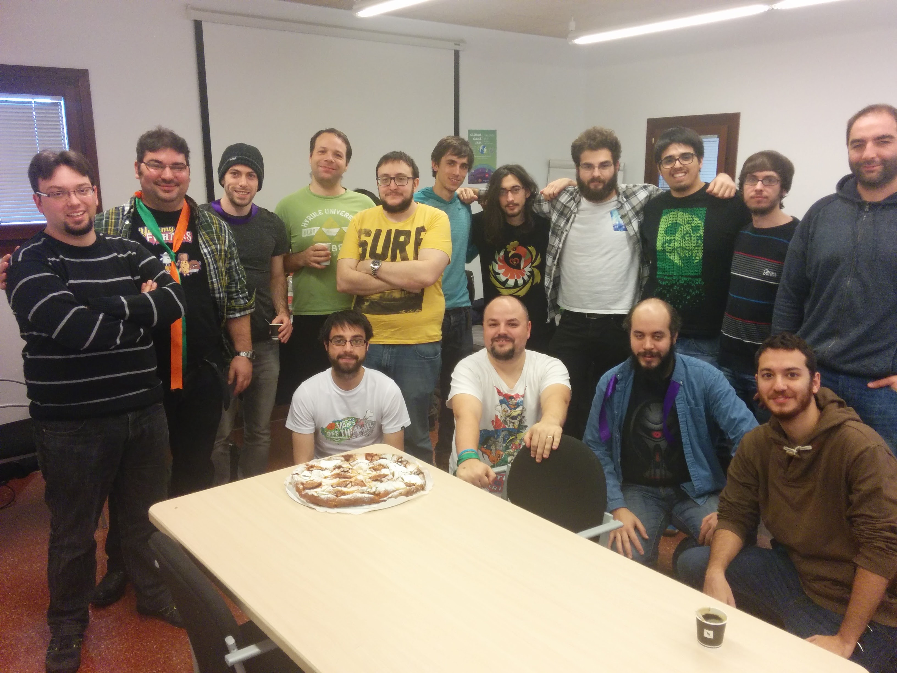

Resumen de la Global Game Jam Mallorca
Ya ha acabado el evento, 48 horas donde auténticos cracks se han reunido en el Parc Bit de Palma de Mallorca para crear juegos en torno a una única palabra, RITUAL.
Para el ojo inexperto podría parecer un grupo de cultistas esbozando dibujos satánicos en papeles, pero lo que realmente hacían era participar en el mayor evento de Game Jam internacional de la historia. Más de 600 ciudades de 92 países distintos han congregado a 36000 jammers, de los cuales 48 lo dieron todo con nosotros en el Centro Empresarial Son Espanyol.

Durmiendo por turnos y poco, entre todos consiguieron crear 12 juegos que demostraron el talento de los profesionales y amateurs de Mallorca.
12 juegos que los participantes han creado y compartido públicamente, que podéis jugarlos y ver cómo están desarrollados desde la página de la Global Game Jam.
Juegos hechos en la Global Game Jam Mallorca 2016
No tienen modelo de negocio, ni retorno de inversión, ni todas esas palabras que se han vuelto tan comunes a día de hoy, son juegos, hechos por y para jugadores y no importa nada más que divertirse.


Desde aquí queremos daros las gracias, a participantes y mentores, por hacer que el fin de semana sea tan increíble. Nuevos amigos y algunos irreductibles compañeros que están siempre con nosotros.
Enlaces de interés:
URL Global: http://globalgamejam.org/
URL Mallorca: http://gamejam.gdgmallorca.com/
Hashtags: #ggj16 #GGJMallorca @gdgmallorca